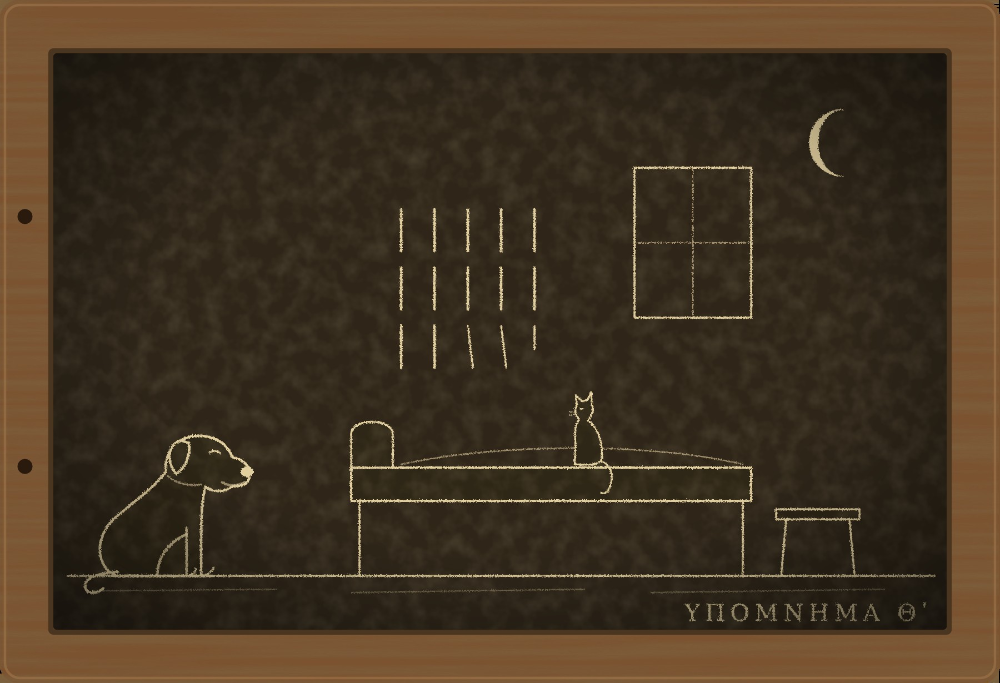

Гипомнема IX Счёт

I
Двери храма Януса на Форуме закрывают, когда во всей империи мир, и открывают, когда Рим идёт на войну. Я не помню, чтобы их когда-нибудь закрывали, и привык считать, что они просто стоят открытыми, как стоят открытыми двери лавок. Но этой весной их торжественно затворили накануне, чтобы на следующий день торжественно распахнуть, и Рим собрался смотреть, как семнадцатилетний Август открывает войну с персами. Персы ничего об этом не знали. Они уже не первый год хозяйничали в Месопотамии.
Двор уходил на восток весь: Август, его тесть, префект претория Тимесифей, гвардия, канцелярия, писцы, повара и стражи слов по части формул. В канцелярии числился Евмен. Я узнал об этом от Никанора, а Никанор от старейшего, а старейший, как всегда, ни от кого: он просто помнил.
Перед выступлением гвардия должна была ещё раз повторить присягу. Этого требовал не закон, а обычай, который ввёл Тимесифей: когорты, уходящие из Рима в поход, повторяют свою присягу на Марсовом поле перед знамёнами, чтобы каждый солдат унёс её в себе свежей. Присягу читают хранители. Хранителей у неё двое, с лета двести тридцать восьмого года: Никанор и Диодор.
И на этот раз Тимесифей придумал ещё одно. Перед тем как прочесть формулу когортам, хранители сами клянутся у знамён, что прочтут её так, как она была сказана. Префект рассудил, что после истории с Феоном у Августа должна быть уверенность в своих хранителях, и, вероятно, был прав. Формулу этой клятвы составлял не я, но она была короткая и честная:
— «Слова, которые я прочту, те самые, что были сказаны когортами Августу Гордиану в год его воцарения. Клянусь в этом перед знамёнами».
Никанор и Диодор поклялись за день до выступления, на рассвете, на Марсовом поле, при жреце и при двух старейших коллегии, которые согласились хранить. Я стоял за спинами старейших и слушал. Голос у Никанора сел на слове «сказаны», у Диодора на слове «когортами». Оба произнесли формулу так, как были обязаны, а затем по очереди прочли присягу десяти когортам, с именем Марка Антония Гордиана, так же, как в первый раз её прочли в лагере. До луны оставалось девятнадцать ночей.
На следующий день двор ушёл. Двери Януса остались открытыми.
II
Диодор пришёл ко мне через восемь дней, вечером, без Никанора.
Это было в первый раз. Он кивал мне в базилике с тех пор, как хранил мою клятву о Гермогене, и пришёл ко мне наутро после той ночи, когда я составил присягу, и приходил с Никанором, когда у Никанора было ко мне дело. Один он не приходил никогда. Ферокс встретил его как своего и повёл за плащ к табурету, Пами спустился с балки и сел на стол, ближе к гостю, чем обычно.
— Я хочу тебя спросить, — сказал Диодор. — Ты помнишь, как звучала присяга в ту ночь, когда ты её составил?
— Помню.
— Скажи.
Я сказал. Он слушал, закрыв глаза, и я видел, как он сравнивает: шевелит губами вслед за мной, отстав на полслова, как отстают ученики.
— Так, — сказал он, когда я закончил. — Так я её и прочёл.
— Тогда что тебя тревожит?
Он открыл глаза.
— Ко мне ходит человек, — сказал он. — С Палатина. Он не ушёл с двором. Сказал, что задержится на месяц по делам канцелярии и догонит в Иллирике. Он приходит раз в два-три вечера, садится, складывает руки и говорит одну фразу. Потом уходит.
— Какую фразу?
— Каждый раз другую. Я расскажу по порядку, ты так любишь.
И он рассказал по порядку, как рассказывают стражи, с голосами.
В первый вечер постучали в сумерках. Диодор открыл и увидел на лестнице человека с обыкновенным лицом, в тёмном плаще, которого видел в базилике один раз, в тот день, когда старейший назвал его имя. Человек сказал, что пришёл не по делу, и спросил, можно ли сесть. Диодор впустил его, потому что ему стало любопытно. Евмен сел на табурет у постели, сложил руки на коленях и долго оглядывал комнату: полку с глиняными светильниками, кувшин, окно на крыши, кровать. Потом сказал:
— «Зимой ты помнил присягу без имени, и голос у тебя не садился».
Диодор ответил, что зимой его память подменили, что коллегия это признала и что Феона за это отправили на восток. Евмен выслушал, не перебивая, и ничего не ответил. Он встал, поклонился и ушёл. Он не стал спорить, не стал повторять, и Диодор долго сидел один, отвечая ему вслух, потому что сказать было что, а слушать было некому.
— Наутро я поклялся у знамён, — сказал Диодор. — А вечером, после чтения когортам, я пришёл домой и прочёл присягу сам себе, вслух, как читаю каждый вечер всё, что храню. И остановился перед словом «Марка». Ненадолго, на вдох. Я никогда раньше там не останавливался.
Во второй раз Евмен пришёл через два вечера. Диодор ждал его и приготовился. Он заранее разложил по памяти всё, что скажет: про Феона, про табличку, про то, как вспомнил формулу голосом Мнесарха. Евмен сел, сложил руки и молчал так долго, что Диодор начал говорить первым и сказал всё, что приготовил. Евмен дослушал до конца. Потом сказал:
— «Ты сам сказал коллегии, что не помнил, что помнишь».
— Это была правда, — сказал мне Диодор. — Я так и сказал, слово в слово. Он повторил меня моим же голосом, так, как я говорил это в базилике, с той же запинкой. Я понял, что он стоял тогда за колоннами. Я его не видел.
На третий раз Диодор решил поймать его. Он сказал Евмену: ты говоришь мне то, во что веришь, так поклянись в этом, найдём жреца и двух стражей. Евмен ответил, что клянутся в том, о чём спрашивают, а его ни о чём не спрашивают. Потом посмотрел на полку со светильниками и сказал, совсем не так, как говорил свои фразы, тише:
— У тебя хорошая память. У моей сестры была такая же. Она помнила всё, что ей говорили, и потому ей нельзя было говорить лишнего.
Диодор не понял, к чему это, и не спросил. А Евмен, помолчав, сказал третью фразу:
— «Если память вернулась от чтения, откуда ты знаешь, что вернулась твоя».
— После этого я не спал, — сказал Диодор. — Я лежал и читал присягу, и каждый раз останавливался перед «Марка», и не знал, останавливаюсь ли я потому, что мне это внушили теперь, или потому, что так было всегда, а я не замечал. У стража нет ничего, кроме памяти. Если в ней появилась одна щель, в неё смотришь всю ночь.
Вчера Евмен пришёл в четвёртый раз. Он не сел. Он постоял в дверях, посмотрел на стену над постелью и сказал:
— «До луны двенадцать ночей».
И ушёл.
— Он ни разу не сказал мне ничего, в чём я мог бы его поймать, — сказал Диодор. — Каждая фраза правда. Зимой я помнил без имени. Я сказал коллегии то, что он повторил. Я вспомнил присягу, прочитав табличку. И вчера до луны действительно было двенадцать ночей.
— Ты знаешь, кто это?
— Знаю. Никанор сказал мне его имя ещё весной. — Диодор помолчал. — Я впустил его, потому что хотел посмотреть, как он это делает. Я думал, что с тем, кто знает, как делается фокус, фокус не получится. Учитель, это получается.
Он назвал меня учителем, хотя учил его не я. Я не стал поправлять.
— Значит, первую фразу он сказал тебе накануне клятвы, — сказал я.
Диодор ответил не сразу.
— Да. Я тогда не придал этому значения.
Пами на столе повернул голову ко мне, и я понял, что он думает о том же, о чём я. Накануне. Значит, когда Диодор стоял у знамён и клялся, что прочтёт присягу так, как её сказали, у него в голове уже лежала эта фраза.
— Ты сомневался у знамён? — спросил я.
— Нет, — сказал он и снова помолчал. — Не знаю. Я не помню, чтобы сомневался. Но я теперь не знаю, помню ли я то, что помню.
III
Я сделал то единственное, что мог. Ночью мы пошли к Досифею.
Старик проснулся сразу, словно ждал, и без вопросов провёл нас в каморку Юста, где теперь живёт новый писец и где в двух мешках лежат мои таблички. Я нашёл нужную на ощупь: я помню их по весу и по шнурку. Диодор поднёс её к лампе.
«Я человек Императора Цезаря Марка Антония Гордиана Августа». Поперёк имени шёл след кошачьей лапы, пять отпечатков в мягком воске, твёрдые и ясные, как в ту ночь.
Диодор читал долго. Потом поднял на меня глаза.
— Я вижу слова, — сказал он. — Я вижу лапу. Я знаю, что ты говоришь правду о той ночи. Но, учитель, откуда я знаю, что в ту ночь ты сам помнил правильно? Ты составлял формулу, ты мог ошибиться. Кот мог пройти по ошибке. Я двадцать восемь лет учился верить тому, что слышу, и год назад узнал, что слышанное можно подменить. Теперь я узнал, что можно подменить и написанное, если усомниться в том, кто писал.
— Диодор…
— Я не обвиняю тебя. Я говорю, что мне не на что встать.
Досифей, который всё это время сидел в дверях, сказал негромко:
— У нас есть закон о клятве по ошибке, страж. Если человек клялся, веря, его не судят. Ты верил у знамён?
— Я не знаю, что я делал у знамён, — сказал Диодор. — В этом и беда.
Мы проводили его до дома. Он жил на Виминале, в двух комнатах над лавкой медника, один. У двери он обернулся.
— Он сказал вчера: «До луны двенадцать ночей». Я не хотел считать. Учитель, я считаю с тех пор не переставая. Я не могу не считать. Меня учили считать слова, и я считаю ночи, как слова, по одной, и каждая ложится в память, и я не могу её стереть.
— Не считай, — сказал я. Я сказал это так, как говорят ребёнку, который боится темноты: заранее зная, что не поможет.
— Ты считаешь пятнадцать лет, — сказал он и улыбнулся. — Ты меня этому и научил, не зная.
Никанор узнал обо всём утром. Он перебрался к Диодору в тот же день, сидел с ним по вечерам и не открывал дверь никому. Человек с Палатина пришёл через два дня, постучал, услышал за дверью голос Никанора, сказал через дверь одну фразу и ушёл. Фраза была: «До луны девять ночей». Её услышали оба.
IV
Диодора нашли мёртвым за четыре ночи до луны.
Нашёл его Никанор. Он заснул под утро на полу у двери, проснулся, когда рассвело, и увидел, что Диодор лежит на постели одетый, на спине, с открытыми глазами, и смотрит в стену. Он был холодный. На нём не было ни одной отметины. Медник снизу, которого позвали первым, сказал, что так умирают от сердца, а сердце у стражей слабое, потому что они всю жизнь сидят.
Рим рассудил быстро и, как всегда, просто. Хранитель гвардейской присяги поклялся у знамён, что прочтёт её так, как её сказали, и умер до луны. Значит, прочёл не так. Значит, имени Августа в присяге не было, а Диодор вписал его самовольно, и боги не дали ему этой вольности. Через три дня это повторяли в каждой лавке. Через пять об этом спорили в сенате. Двор был уже за Альпами и ничего не сказал.
Я пришёл на Виминал с Фероксом, когда тело ещё лежало в комнате. Никанор сидел у двери, на том же месте, где заснул, и не встал, когда мы вошли.
Я искал всё, что нашёл бы в любом другом деле. Чашу, из которой он пил, и запах в ней. Подушку, следы на шее, синеву на ногтях, мокрые волосы, угли, золу. Не было ничего. Чаша пахла водой. Подушка лежала под головой, как кладут её живые. Окно было открыто, и в комнате пахло весной.
Ферокс обошёл комнату, остановился у табурета, стоявшего у постели, и долго нюхал его, виляя хвостом.
— Здесь сидел тот, кого я водил к тебе за плащ, — сказал он. — Часто. Давно не сидел, дней пять, но сидел много раз.
Пами пришёл по крыше и влез в окно. Он прошёл по постели, не касаясь Диодора, и сел у стены над изголовьем.
— Смотри, — сказал он.
На штукатурке над постелью, там, куда смотрел Диодор, были выцарапаны черты, ровные, короткие, одна под другой. Сначала их было много и они стояли плотно. Потом стали реже. Последние три были кривыми, и последняя не дошла до конца. Я сосчитал. Их было пятнадцать.
— Он считал, сколько прошло, — сказал Пами. — Не сколько осталось. Ты считаешь, сколько осталось. Он считал, сколько уже лежит в памяти.
Никанор встал с пола, подошёл и посмотрел на стену. Он ничего не сказал. Он стоял и читал черты, как читают формулу, которую придётся помнить до смерти.
V
Ни один закон Рима не знает такого убийства. Я перебрал их все, как перебираю формулы, и не нашёл ни одного.
Убийца в Риме — тот, кто отнял жизнь рукой, ядом, огнём или водой. Можно судить того, кто нанял убийцу, и того, кто подал ему меч. Человек, который трижды в неделю садился у постели и говорил правду, под этот закон не подпадает. Свидетелей его фраз у меня было двое: мёртвый Диодор и Никанор, который слышал одну, через дверь, и эта одна была о том, сколько ночей до луны. Если привести человека к претору за то, что он назвал правильное число, претор рассмеётся, и будет прав.
Ночью я сидел у окна и думал не о законе.
Я пятнадцать лет говорил себе, что знаю, за что карают боги. За то, во что человек верил, когда открывал рот. Диодор, когда клялся, верил. Он не помнил, чтобы сомневался, и я ему верю: он был из тех, кто не умеет лгать даже себе. Значит, если карают боги, Диодор должен был дожить до луны. Он не дожил.
Значит, либо он всё-таки сомневался у знамён, в ту минуту, после первой фразы, сказанной накануне, и сам этого не заметил. Тогда боги в своём праве, и я по-прежнему знаю, за что они карают.
Либо боги здесь ни при чём, и Диодора убило то, что он пятнадцать ночей подряд ложился и считал.
Я не знал, какое из двух объяснений хуже. Первое значило, что человека можно заставить солгать, не дав ему солгать: достаточно сказать ему правду накануне. Второе значило, что пятнадцать лет я считал ночи, которые ничего не значат, и что все, кого Рим записал в покаранные, могли умереть от того же счёта. Пами говорит, что Сосикл не смотрит на небо, потому что ему там нечего искать. Диодор смотрел в стену.
Утром я сделал то, чего не делал ещё ни разу. Я пошёл искать Евмена сам.
VI
Евмен задержался в Риме, как обещал Диодору, на месяц. Канцелярия, которую двор оставил в городе, сидит на Палатине, в длинном доме за храмом Аполлона, и стражей слов туда пускают без вопросов: стражи ходят туда каждый день по делам формул. Меня пропустили, потому что с прошлой весны я снова страж.
Канцелярия уже собиралась в дорогу. В длинных комнатах писцы укладывали в короба свитки, которые двору понадобятся на войне: списки легионов, договоры с городами на востоке, старые письма прежних Августов к прежним царям персов. Таблички стояли стопками у стен, перевязанные шнуром, и на каждой висела бирка. Я подумал, что никогда не видел столько записанного в одном месте и что здесь, на Палатине, письмо почему-то никого не смущает.
Евмен сидел в маленькой комнате с окном на Большой цирк, один, у пустого стола. На столе не было ни табличек, ни свитков: всё уже уложили. Он поднял на меня глаза, как поднимают на того, кого ждали.
— Ты пришёл сказать, что я его убил, — сказал он.
— Я пришёл спросить.
— Спрашивай.
Я сел на табурет напротив, не дожидаясь приглашения, и сложил руки на коленях. Он посмотрел на мои руки и чуть заметно улыбнулся. Мы сидели друг против друга, как сидели восемь лет за одним столом, только теперь первым говорил я.
— Зачем?
Он подумал. Он всегда думал, прежде чем ответить, и отвечал один раз.
— Присяга с именем держит гвардию при одном мальчике, — сказал он. — Мальчик идёт на войну. На войне умирают. Если мальчик умрёт в походе, гвардия, которая клялась его имени, будет свободна, и следующего Августа выберет тот, у кого в лагере больше денег. Если присяга будет званию, гвардия останется при Августе, кто бы им ни стал, и не сможет торговаться. Теперь Рим считает, что имени в присяге не было. Когда мальчик умрёт, это пригодится.
— Ты говоришь «когда».
— Я говорю правду. Ты видел, что было за последние десять лет. Сколько Августов умерло своей смертью?
Я не ответил. Он знал, что ни одного.
— Я не лгу под клятвой и вне её, ты это знаешь, — продолжал он. — Я ничего не сказал Диодору, что не было бы правдой. Я не трогал его и пальцем.
— Ты убил его.
— Тогда поклянись в этом. Найди жреца, место и двух стражей, и поклянись, что Диодора убил я. Ты сможешь?
Я молчал. Я знал, что не смогу, и не потому, что боюсь. Я не знал этого так, как нужно знать, чтобы клясться.
— Вот видишь, — сказал Евмен. — А теперь спроси меня, не хотел ли я его смерти, и потребуй клятвы. Я поклянусь у любого алтаря, какой ты выберешь, что не хотел. И доживу до луны. Как ты думаешь, почему?
— Потому что ты не хотел, — сказал я. — Или потому что ты не считаешь ночей.
— Вот это и есть вопрос, — ответил он. — Ты пятнадцать лет носишь его в себе и ни разу не задал вслух. Если Диодора покарали боги, значит, он солгал у знамён, и я лишь показал ему, что он солгал. Если боги тут ни при чём, значит, богов в этом деле нет вовсе и Рим держится на пустом месте, а тогда я единственный, кто это место охраняет. Выбери. Ты пятнадцать лет не выбираешь. Ты сидишь у окна и считаешь, и ждёшь, что кто-нибудь выберет за тебя.
Он был прав в том, что я не выбирал, и он знал, что я это знаю.
— Ты подменил мне память, — сказал я. — В двести двадцать шестом. За нашим столом.
— Я повторял тебе формулу каждый вечер. Ты слушал. — Он помолчал. — Аполлоний хотел выбрать. Он хотел выйти к коллегии и сказать то, что думает. Ты думаешь, что я его остановил из злобы или ради места при дворе. Я остановил его, потому что видел, что будет, если люди перестанут считать ночи. Посмотри на гвардию. Посмотри на сенат. Посмотри на рынок, где отпущенник клянётся патрону, а меняла вкладчику. Всё, что в Риме не воюет друг с другом, держится на том, что каждый, солгав, начинает считать. Убери счёт, и через год ты не узнаешь этого города.
— А сестра? — спросил я. Я не собирался этого спрашивать.
Он впервые за разговор опустил глаза.
— Сестра спросила меня перед смертью, кто из нас прав. Я ей ответил. Тебе я этого не скажу. Ты сам знаешь, что тебе она бы не поверила.
Я не знал. Но спрашивать дальше не стал: у меня было чувство, что, если я спрошу, он ответит правду, а я к ней не готов.
— Диодор не лгал, — сказал я.
— Не знаю, — ответил Евмен. — И ты не знаешь. В этом всё и дело.
Он встал и подошёл к окну. Внизу, в Большом цирке, рабы сгребали песок после утренних бегов.
— Я ухожу на восток, — сказал он, не оборачиваясь. — Если мальчик вернётся, тебе не о чем будет беспокоиться. Если не вернётся, ты увидишь, что я был прав. В обоих случаях до луны далеко.
Он ушёл догонять двор через три дня. Канцелярия говорит, что в Иллирике он присоединился к свите префекта.
VII
На девятый день после похорон коллегия собралась в углу базилики за колоннами, чтобы вычеркнуть память Диодора.
Так делают со всяким стражем, умершим до луны после клятвы. Его память объявляют нечистой, и всё, что он хранил, считается несказанным, если только этого не хранит кто-то другой. Клятвы, которые Диодор хранил вдвоём с Никанором, остались, потому что их помнит Никанор. Клятвы, которые он хранил с другими, остались, потому что их помнят другие. Пропала только одна, та, которую он хранил один: клятва старого вольноотпущенника с Виминала, который три года назад поклялся, что вернул долг соседу-меднику, и через год умер. Медник об этом не знал. Теперь, по закону, долг снова не возвращён, и медник, если захочет, может требовать его с наследников. Я не знаю, захочет ли он.
Присягу гвардии коллегия не тронула, потому что её хранит Никанор. Но старейшие постановили дать ей новых хранителей, двоих, по выбору префекта претория. Префект претория в Иллирике. Выбирать будут там.
Никанор выслушал это, стоя у колонны, со сложенными руками. Когда коллегия разошлась, он подошёл ко мне.
— Ты говорил Диодору не считать.
— Говорил.
— Он не мог. Я тоже не смогу. Если мне скажут, что я солгал, я буду считать. Меня учили так же, как его.
— Тогда считай не ночи, — сказал я.
— А что?
— Его. Всех, к кому он садился. Мы знаем Трифона, Приска, Сатурнина, Анфима, Диодора. Будут ещё. Когда их станет достаточно, чтобы произнести вслух, мы произнесём.
Никанор посмотрел на меня долго.
— Ты наконец выбрал? — спросил он.
— Нет, — сказал я. — Но я начал считать то, что можно сосчитать.
Вечером я достал из-под половицы табличку «Чужие кары» и записал двенадцатое дело. Я долго не знал, какие слова поставить, и поставил те, что были правдой: «Диодор, страж слов. Ни раны, ни яда. Пятнадцать черт на стене. За кару принял Рим. Сидел у постели Евмен».
Обратную сторону я перевернул, посмотрел на две записи, что стоят на ней, и прибавил третью, не о себе и не о Сосикле, а о том, чего не знаю: «Если карают боги, Диодор солгал. Если не карают, его убил счёт. Евмен говорит: выбери».
Ферокс лежал у двери и не спал. Пами не стал подниматься на балку и лёг на стол, рядом с табличкой, положив лапу на край, как кладут лапу на то, что не хотят отдавать. Луна к тому времени давно прошла, до следующей было далеко. Я сидел у окна и не считал. Это оказалось труднее, чем считать.